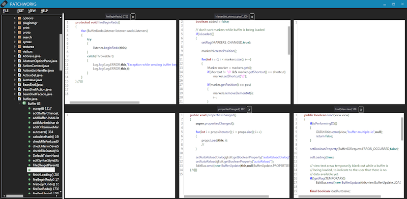

I work on dev tools.
TL;DR: Developers spend a lot of time navigating code, so I spent the last 8 years building tools to make code navigation more efficient. I'll share some design principles that we learned along the way. If you want to try out our latest tool, my student recently released an open source Atom plugin, CodeRibbon.
See the discussion of this post on Reddit's /r/programming.
Empirical studies found that developers spend 35-50% of their time just navigating code1,2. Many of these navigations are wasted though, given that 50% of them yielded less information than developers expected and 40% required more effort than predicted3.
Search is not a great solution either, since it is rarely used1,4, time consuming for developers to process the results2, most navigations are to recently visited code1,5, and often leads to irrelevant code1.
Before I show you our open source tool for navigating code, let me tell you the 8-year journey that it has taken to get here. From Patchworks to CodeRibbon!
Back in 2013, I was brainstorming ideas for my Master's project with my advisor, Scott Fleming. He had been researching how developers seek information and suggested designing a new code editor that doesn't have tabbed documents.
The most relevant tool I could find was Code Bubbles, pictured above. It made headlines a few years earlier6 by introducing a novel interface that aimed to fix several of the issues we were now looking at: it enables efficient juxtaposition of code, reduces scrolling, eliminates tabs, etc. It does so by allowing you to open individual functions in free-floating bubbles on a large two-dimensional canvas. You can pan around this large space as if you are viewing Google Maps.
We worried this was too much freedom, so we added constraints: a fixed grid of code documents on a one-dimensional ribbon.

The idea is that you view multiple pieces of code on-screen by default. Once your screen is full, you shift the ribbon either left or right. The ribbon extends to infinity and functions roughly as a timeline of all the code you have previously viewed. You can also rearrange the open code documents by dragging them around, or you can double click on one to go into full-screen.
A screenshot of one of my prototypes can be seen below. It was built with C# and WPF as a standalone editor. It had just enough features to conduct some preliminary studies.
You can also zoom out to view more of your ribbon:
When compared to Eclipse and Code Bubbles, we found that developers spent less time navigating, made fewer navigation mistakes, and spent less time arranging their open code documents while using Patchworks7.
There was a flurry of interest in Patchworks. Developers from Google and Microsoft emailed me asking where they can download it. Companies asked me to integrate the design into their software. Recruiters asked if I wanted an internship.
Sadly, it was just a research prototype that I'd be far too embarrassed to let anyone use outside of the lab.
Next I implemented Patchworks into the proprietary LabVIEW development environment. We thought it could be particularly useful for LabVIEW since the code is visual and takes up a lot of screen space. National Instruments was very generous in supporting my research and giving me access to their source code and engineers.
At this point, I knew the world needed Patchworks!
After conducting a lab study with professional engineers8, we came up with a set of design principles that can be applied to virtually any code editor:
I have students still pushing towards a generalized set of design principles for code editors, so stay tuned.
Fast forward to modern times. My PhD student, Ben Klein, has been implementing and extending the Patchworks concept as an Atom plugin called CodeRibbon. It has more features and is very sleek.
It supports the original ribbon concept, but also lets you reconfigure your grid size and supports all sorts of shortcuts to maximize productivity.

You can check out the CodeRibbon website, the GitHub repo, and go download the plugin to try yourself.
Let us know if you have any feedback!
1 A. J. Ko, B. A. Myers, M. J. Coblenz and H. H. Aung, "An Exploratory Study of How Developers Seek, Relate, and Collect Relevant Information during Software Maintenance Tasks," in IEEE Transactions on Software Engineering, vol. 32, no. 12, pp. 971-987, Dec. 2006, doi: 10.1109/TSE.2006.116.
2 David Piorkowski, Scott Fleming, Christopher Scaffidi, Christopher Bogart, Margaret Burnett, Bonnie John, Rachel Bellamy, and Calvin Swart. 2012. Reactive information foraging: an empirical investigation of theory-based recommender systems for programmers. In Proceedings of the SIGCHI Conference on Human Factors in Computing Systems (CHI '12). ACM, 1471–1480. DOI:https://doi.org/10.1145/2207676.2208608
3 David Piorkowski, Austin Z. Henley, Tahmid Nabi, Scott D. Fleming, Christopher Scaffidi, and Margaret Burnett. 2016. Foraging and navigations, fundamentally: developers' predictions of value and cost. In Proceedings of the 2016 24th ACM SIGSOFT International Symposium on Foundations of Software Engineering (FSE 2016). ACM, 97–108. DOI:https://doi.org/10.1145/2950290.2950302
4 David J. Piorkowski, Scott D. Fleming, Irwin Kwan, Margaret M. Burnett, Christopher Scaffidi, Rachel K.E. Bellamy, and Joshua Jordahl. 2013. The whats and hows of programmers' foraging diets. In Proceedings of the SIGCHI Conference on Human Factors in Computing Systems (CHI '13). ACM, 3063–3072. DOI:https://doi.org/10.1145/2470654.2466418
5 A. Singh, A. Z. Henley, S. D. Fleming and M. V. Luong, "An Empirical Evaluation of Models of Programmer Navigation," 2016 IEEE International Conference on Software Maintenance and Evolution (ICSME), Raleigh, NC, USA, 2016, pp. 9-19, doi: 10.1109/ICSME.2016.84.
6 Andrew Bragdon, Robert Zeleznik, Steven P. Reiss, Suman Karumuri, William Cheung, Joshua Kaplan, Christopher Coleman, Ferdi Adeputra, and Joseph J. LaViola. 2010. Code bubbles: a working set-based interface for code understanding and maintenance. In Proceedings of the SIGCHI Conference on Human Factors in Computing Systems (CHI '10). ACM, 2503–2512. DOI:https://doi.org/10.1145/1753326.1753706
7 Austin Z. Henley and Scott D. Fleming. 2014. The patchworks code editor: toward faster navigation with less code arranging and fewer navigation mistakes. In Proceedings of the SIGCHI Conference on Human Factors in Computing Systems (CHI '14). ACM, 2511–2520. DOI:https://doi.org/10.1145/2556288.2557073
8 Austin Z. Henley, Scott D. Fleming, and Maria V. Luong. 2017. Toward Principles for the Design of Navigation Affordances in Code Editors: An Empirical Investigation. In Proceedings of the 2017 CHI Conference on Human Factors in Computing Systems (CHI '17). ACM, 5690–5702. DOI:https://doi.org/10.1145/3025453.3025645